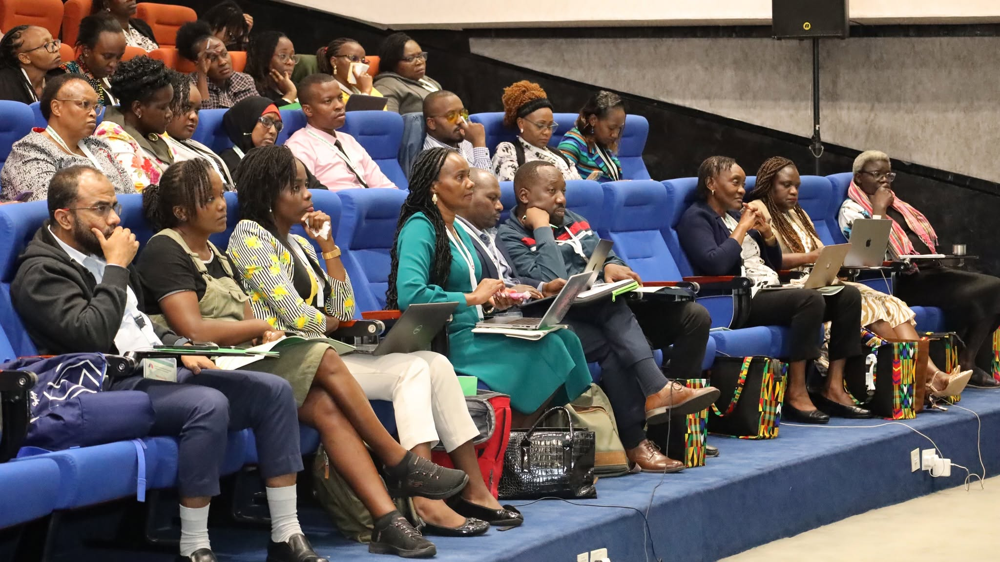

The TB & Lung Health Symposium: Advancing a More Integrated, Patient-Centred Response to Respiratory Health
The TB & Lung Health Symposium brought together researchers, clinicians, policymakers, programme implementers, partners, survivors, and other stakeholders for meaningful conversations on the evolving landscape of tuberculosis and respiratory health in Kenya and beyond.
The symposium provided a platform to examine the challenges that continue to shape TB and lung health, while highlighting emerging evidence, innovations, clinical advances, and opportunities to strengthen the systems through which prevention, diagnosis, treatment, and long-term care are delivered.
At its core, the symposium recognised that the future of lung health cannot be defined by individual diseases or isolated interventions. Tuberculosis, Post-TB Lung Disease (PTLD), asthma, COPD, lung cancer, pleural disease, and other respiratory conditions exist within interconnected health and social systems. Addressing them therefore requires approaches that bring together clinical expertise, public health, research, technology, policy, financing, and — importantly — the voices of people whose lives are affected by these conditions.
Looking Beyond the Numbers
Conversations around TB began with a reflection on the continuing burden of the disease and the factors that influence who becomes vulnerable, who accesses care, and who is able to recover fully.
The findings of the 2024 Nairobi County TB Prevalence Survey provided an opportunity to consider Kenya's progress since the 2016 survey, while also drawing attention to the work that remains. Beyond epidemiological figures, discussions examined the wider determinants that continue to influence TB, including poverty, stigma, inadequate nutrition, and mental health challenges.
These realities reinforce an important principle: TB cannot be addressed through medical interventions alone. Effective responses must recognise the circumstances in which people live and the barriers that influence their ability to seek, access, and complete care.
The symposium also considered the changing global health financing environment and what it means for the sustainability of TB and lung health programmes. With donor priorities evolving, the discussions explored the need for locally responsive financing models, stronger integration of TB services within primary health care, and approaches that can support progress towards universal health coverage.

Prevention, Early Diagnosis and Better Access to Care
Prevention and early diagnosis emerged as critical pillars in the effort to reduce the burden of TB.
Participants examined preventive therapy for children, adult contacts, and people living with HIV, alongside the potential contribution of emerging TB vaccines such as M72/AS01E. Nutrition was also recognised as an important component of prevention, particularly given the relationship between nutritional vulnerability and susceptibility to TB.
On the diagnostic front, the symposium showcased approaches aimed at finding TB earlier and more efficiently. Experiences from Kenya's childhood TB algorithm, the use of AI-supported digital chest X-rays in Siaya County, and emerging near point-of-care tests using non-sputum samples demonstrated how innovation can help address longstanding diagnostic challenges.
The emphasis was not simply on developing new technologies, but on ensuring that useful innovations can be incorporated into real-world health systems and reach the people who need them.
Putting Patients at the Centre of TB Care
Improving outcomes also requires looking closely at the experience of people moving through the TB care cascade.
Discussions around shorter treatment regimens for children and the challenges affecting adolescents and young adults highlighted the importance of designing services around the needs of patients rather than expecting patients to navigate systems that were not designed with their realities in mind.
The call for TB and lung health services to be person-centred, rights-based, and gender-responsive reflected a broader shift in thinking about healthcare — one in which successful treatment is measured not only by clinical outcomes, but also by dignity, accessibility, equity, and quality of life.
This patient-centred perspective was brought to life through the participation of TB and PTLD survivors.
Their testimonies offered a powerful reminder that the impact of TB extends beyond diagnosis and treatment. Survivors spoke to the realities of living through illness and recovery, including the physical, emotional, and social dimensions of their experiences.
A creative skit on TB awareness further demonstrated the role that storytelling, art, and lived experience can play in challenging stigma and communicating health messages. Together, these moments reinforced the value of placing patient voices alongside scientific evidence.
Addressing the Long-Term Consequences of TB
One of the important areas of discussion was Post-TB Lung Disease, reflecting the growing recognition that completing TB treatment does not necessarily mark the end of a patient's respiratory health journey.
PTLD can leave survivors with persistent respiratory symptoms and impaired lung function, creating a need for continued assessment, management, and rehabilitation.
The symposium brought attention to PTLD among both children and adults, while also exploring broader challenges in chronic respiratory care, including COPD and bronchitis in low-resource settings.
Pulmonary rehabilitation emerged as an important component of this continuum of care. By supporting physical recovery, functional capacity, and quality of life, rehabilitation can help bridge the gap between successfully completing treatment and genuinely recovering from the effects of disease.
This broader approach reflects the need to move from a model focused primarily on treating acute disease towards one that supports patients before, during, and after treatment.
Strengthening the Wider Lung Health Response
While TB remained a central focus, the symposium also highlighted the need for stronger and more integrated responses to chronic and non-communicable respiratory diseases.
Asthma care in Kenya was among the areas examined, with discussions addressing diagnosis, access to appropriate treatment, and patient self-management. Participants also considered how implementation research can help translate evidence into practical interventions that work within local health systems.
Integrated approaches to the diagnosis of chronic lung diseases and stronger drug-resistance surveillance further demonstrated the importance of building health systems capable of responding to multiple respiratory challenges simultaneously.
Such integration is particularly important in resource-constrained settings, where fragmented disease-specific programmes can place additional pressure on already stretched systems.
Interventional Pulmonology and the Changing Landscape of Respiratory Care
Advances in interventional pulmonology provided another important dimension of the symposium.
Experts explored developments in the management of lung nodules, lung cancer, pleural disease, and chronic airway conditions, demonstrating how minimally invasive procedures and advanced diagnostic technologies are creating new possibilities for patients with complex respiratory conditions.
These developments are changing how clinicians approach diagnosis and treatment, while opening opportunities for earlier detection and more targeted interventions.
However, the discussions also underscored the importance of making such advances accessible and sustainable. Innovation has limited value if it remains concentrated in a small number of facilities or inaccessible to the populations that need it most.
Expanding specialist expertise, strengthening infrastructure, supporting multidisciplinary teams, and developing appropriate referral pathways will therefore remain essential to translating advances in interventional pulmonology into broader improvements in respiratory care.
Harnessing Technology, Data and Research
Technology and research featured prominently throughout the symposium, reflecting the increasingly important role they play in shaping the future of TB and lung health.
Artificial intelligence applications in TB elimination demonstrated how digital tools can support screening and identification of people who may require further evaluation. Work by Wadhwani AI provided an example of how AI can be applied to public health challenges, while EPCON's TB modelling work illustrated the value of data-driven approaches in understanding disease trends and informing strategic decisions.
Discussions on advanced HIV disease further reinforced the importance of using evidence to understand interconnected health challenges and improve patient outcomes.
Together, these innovations highlighted an important lesson: technology should not replace clinical expertise or human connection. Rather, it should strengthen the ability of health workers, researchers, policymakers, and communities to make better decisions and deliver more responsive care.
From Collaboration to Action
Perhaps the most important contribution of the TB & Lung Health Symposium was the space it created for different perspectives to meet.
Researchers brought evidence. Clinicians brought experience from practice. Policymakers and programme teams brought system-level perspectives. Innovators presented emerging technologies. Partners contributed resources and expertise. And survivors brought the lived realities behind the statistics.
These perspectives are most powerful when they are connected.
The symposium demonstrated that meaningful progress in TB and lung health requires collaboration across disciplines and sectors. It requires investment in prevention and diagnosis alongside treatment. It requires attention to both infectious and chronic respiratory diseases. It requires innovation that is grounded in local needs. And it requires health systems that continue to place people at the centre of care.
Most importantly, it requires recognising that recovery does not always end when treatment ends.
Building the Future of TB and Lung Health
The TB & Lung Health Symposium was ultimately a reflection of how far the field has come — and how much more remains to be done.
The advances discussed throughout the symposium offer reasons for optimism: better diagnostic technologies, emerging vaccines, artificial intelligence, improved treatment approaches, advances in interventional pulmonology, stronger approaches to chronic respiratory care, and a growing recognition of the importance of rehabilitation and long-term recovery.
Yet progress will depend on how effectively these opportunities are translated into accessible, equitable, and sustainable services.
The symposium therefore leaves behind more than presentations and discussions. It strengthens connections between evidence and practice, research and policy, innovation and implementation, and — most importantly — science and the people it is intended to serve.
As Kenya continues to confront the burden of TB and the broader challenges of lung health, the path forward will require sustained collaboration, continued investment, bold innovation, and a commitment to ensuring that every person affected by respiratory disease has the opportunity not only to receive treatment, but to achieve meaningful recovery and a better quality of life.